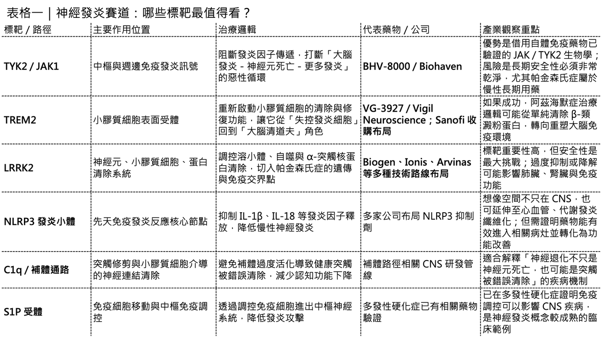
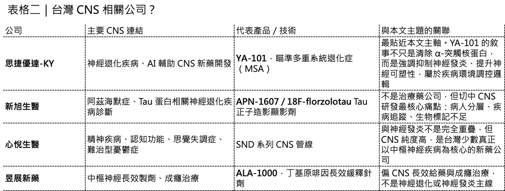

【屢敗屢戰的中樞神經新藥，能否靠「神經發炎」打贏翻身仗？】
中樞神經系統新藥研發，一直是創新藥裡最難啃的一塊骨頭。

🧠 不是市場不大。
恰恰相反，阿茲海默症、帕金森氏症、肌萎縮性脊髓側索硬化症、多發性硬化症、癲癇、憂鬱症、思覺失調症、腦中風，幾乎每一個疾病背後，都是長期照護、家庭壓力、醫療支出與生活品質崩塌。
🧠 真正的問題是：中樞神經疾病太難做。
資料顯示，中樞神經藥物從一期臨床走到核准上市的平均成功率僅約 5.9%，在所有治療領域中屬於倒數；平均開發時間更長達 11 年以上，是醫藥研發裡最耗時、最燒錢、也最容易失敗的領域之一。如果再縮小到阿茲海默症、帕金森氏症這類神經退化性疾病，戰況更慘烈。過去幾十年，主流治療假說集中在清除大腦中的毒性蛋白堆積，例如 β-類澱粉蛋白、Tau 蛋白、α-突觸核蛋白。但這些路線一路走來，伴隨無數臨床失敗、論文爭議、資料重估，以及核准藥物臨床意義被反覆辯論。
🧠 問題是，病人等不起。
阿茲海默症患者失去記憶，不只是病人本人被疾病慢慢吞掉；照顧者、家庭經濟、長期照護系統也會一起被拖進去。帕金森氏症和漸凍症也是一樣。這些病不是單一器官疾病，而是會改變整個家庭生活結構的疾病。
所以問題來了：在 β-類澱粉蛋白、Tau 蛋白、多巴胺、α-突觸核蛋白這些路線之外，中樞神經新藥研發還有沒有新的突破口？近幾年，答案逐漸指向一個方向：神經發炎。不是把神經發炎當成疾病後果，而是把它視為疾病推進器。如果這個假說成立，中樞神經新藥研發可能會迎來一條新的解題路徑：不只是盯著神經元，也要調控大腦免疫系統。

01｜中樞神經新藥為什麼這麼難？
中樞神經新藥之所以屢敗屢戰，首先是因為大腦不是普通器官。
🧩 第一道障礙，是 血腦屏障。
血腦屏障是一套非常嚴格的保護系統，它保護大腦不被血液中的有害物質干擾，但也讓藥物很難進入大腦。許多小分子在體外實驗中看起來活性很好，到了人體卻進不了腦；許多抗體在血液中濃度足夠，但真正能進入中樞神經系統的比例非常低。這讓中樞神經藥物不是只要「打中標靶」就好，還必須證明自己真的進得去腦、在正確區域達到足夠濃度，而且不能引發不可接受的毒性。
🧩 第二道障礙，是疾病模型不可靠。
大腦有數百億個神經元、數兆個突觸連結，還有小膠質細胞、星狀膠質細胞、少突膠質細胞、腦血管細胞與免疫細胞共同構成動態網路。動物模型能模擬其中一小部分病理，但很難完整重現人類慢性神經退化性疾病的真實過程。這也是為什麼很多藥物在小鼠模型裡看起來很漂亮，一到人體臨床就失效。
🧩 第三道障礙，是疾病發現太晚。
許多神經退化性疾病在出現明顯症狀時，大腦其實已經發生多年甚至十幾年的病理變化。等患者開始記憶衰退、步態不穩、動作遲緩、認知下降時，神經元死亡往往已經不可逆。所以中樞神經藥物常常面臨一個殘酷問題：不是藥物一定沒效，而是介入時機可能太晚。
🧩 第四道障礙，是缺乏可靠生物標記。
腫瘤可以靠基因突變、蛋白表現、循環腫瘤 DNA、影像學反應來分層。自體免疫疾病也有抗體、發炎因子、免疫細胞指標。但中樞神經疾病往往缺乏簡單、可靠、可連續追蹤的生物標記。
這會讓臨床試驗變得非常漫長。
🧠病人選不準。
🧠療效看不清。
🧠臨床終點變化太慢。
🧠安慰劑效應又高。
最後試驗不是失敗，就是結果難以解讀。這就是中樞神經領域長期被大藥廠視為「高風險、低確定性」領域的根本原因。

02｜資本退潮後，為什麼「神經發炎」反而成了例外？
中樞神經領域過去不是沒有被熱炒過。
但經歷多輪失敗後，大藥廠曾經集體撤退。2009 年到 2014 年間，多家跨國藥廠大幅削減中樞神經早期研發。Amgen、Pfizer、AstraZeneca 等公司都曾調整神經科學布局。
其中，Amgen 在 2019 年退出大部分神經科學研究與早期開發時，有一句話很值得注意：
公司決定終止神經科學研究與早期開發項目，但以「神經發炎」為中心的項目例外，會由發炎與免疫疾病部門繼續推進。
這個例外非常關鍵。
它代表大藥廠並不是單純認為中樞神經疾病沒有機會，而是認為傳統中樞神經解法太難；相比之下，神經發炎這條路線，至少可以借用免疫學、發炎生物學、自體免疫藥物開發過去累積的知識。這就是神經發炎變得重要的原因。
🔍 它不是完全從零開始的中樞神經假說。
🔍 它有一部分是免疫藥物研發的延伸。
🔍 它把中樞神經疾病從「神經元本位」，拉到「神經、免疫、血管、週邊免疫」共同參與的系統層面。
過去我們常把大腦看成免疫相對獨立的器官。但現在越來越多研究顯示，大腦不是沒有免疫，而是有一套非常精密、非常脆弱的免疫穩態系統。這套系統一旦失衡，就可能成為神經退化的加速器。
03｜神經發炎不是副產物，而可能是疾病推進器
過去很長一段時間，神經發炎被視為神經退化後的副產物。意思是：β-類澱粉蛋白堆積了、Tau 蛋白纏結了、α-突觸核蛋白累積了，神經元受損後，才引發發炎反應。但現在的觀念正在改變。越來越多證據顯示，神經發炎不只是結果，也可能是推動疾病進展的重要因素。
大腦裡有兩類關鍵免疫相關細胞：
🔥 小膠質細胞。在健康狀態下，小膠質細胞負責監控大腦環境、清除細胞碎片、修剪突觸、協助維持神經網路穩態。
🔥 星狀膠質細胞。星狀膠質細胞則支持神經元代謝、維持血腦屏障、調節突觸功能。
但在阿茲海默症、帕金森氏症、漸凍症等疾病中，這些細胞可能進入慢性過度活化狀態。它們不再只是清理垃圾，而是開始釋放大量促發炎因子、趨化因子、補體成分與氧化壓力訊號，並改變吞噬功能與突觸修剪行為。於是，大腦進入一個惡性循環：
1. 蛋白堆積刺激小膠質細胞。
2. 小膠質細胞釋放發炎訊號。
3. 發炎訊號傷害神經元。
4. 神經元死亡釋放更多危險訊號。
5. 更多小膠質細胞與星狀膠質細胞被活化。
6. 血腦屏障被破壞，週邊免疫細胞進入大腦。
7. 發炎反應進一步放大。
這就是神經發炎最可怕的地方。它不是一次性反應，而是可以自我維持的回饋迴路。
如果能在早期打斷這個迴路，理論上就有機會延緩神經退化進程。這和過去單純清除 β-類澱粉蛋白或 Tau 蛋白的策略不同。清除蛋白堆積，像是在清掉垃圾。調控神經發炎，則是在修復失控的清潔系統。
04｜BHV-8000：把自體免疫藥物邏輯帶進帕金森氏症
目前最具代表性的神經發炎候選藥之一，是 Biohaven 的 BHV-8000。BHV-8000 是一款口服、可穿透血腦屏障的 TYK2 / JAK1 雙重抑制劑。它的設計邏輯，是透過抑制 TYK2 與 JAK1 這兩個發炎訊號節點，同時調控中樞與週邊免疫發炎反應。這條管線最聰明的地方，是它沒有從零發明一個完全陌生的標靶。JAK 與 TYK2 訊號通路在自體免疫疾病中已經被充分驗證。問題只是：這套發炎訊號通路能不能被安全、有效地帶進中樞神經疾病？
帕金森氏症的病理，不只是多巴胺神經元退化。越來越多資料指出，中樞與週邊免疫反應都可能參與疾病惡化。腦內小膠質細胞活化、週邊免疫失衡、血腦屏障破壞、發炎因子訊號，共同形成神經發炎惡性循環。
💊 BHV-8000 的邏輯，就是阻斷這個訊號樞紐。
它不是補充多巴胺。不是清除 α-突觸核蛋白。而是試圖降低推動神經退化的發炎壓力。
目前 BHV-8000 的一期臨床資料，重點在安全性、血腦屏障穿透能力，以及能否提供足夠長時間的藥效覆蓋。這些資料若能繼續支持後續研究，就有機會把「免疫調控治療帕金森氏症」這件事往前推一步。如果這條路成功，意義會很大。因為它代表中樞神經疾病可以借用免疫調節小分子的開發邏輯，把原本用在週邊自體免疫疾病的藥理學，轉譯到大腦發炎迴路。但風險也同樣明顯。JAK 訊號通路不是沒有安全性問題。即使 BHV-8000 選擇性設計得更精細，也仍需要證明長期用於神經退化性疾病的安全性。帕金森氏症是慢病，患者可能需要用藥多年，容錯率遠低於腫瘤。所以 BHV-8000 是神經發炎賽道的關鍵驗證點之一。它若成功，會帶動一整批能進入大腦的免疫調節藥物。它若失敗，也會讓市場重新審視「把自體免疫藥物邏輯搬進中樞神經」的風險。
05｜TREM2：小膠質細胞從清道夫變成治療標靶
另一個非常核心的神經發炎標靶，是 TREM2。
TREM2 是小膠質細胞表面的受體，與吞噬作用、脂質代謝、小膠質細胞存活，以及對 β-類澱粉蛋白斑塊的反應有關。TREM2 基因變異被認為與阿茲海默症風險增加有關，因此它一直被視為調控小膠質細胞功能的重要標靶。
TREM2 的藥物開發邏輯很直覺：如果小膠質細胞在阿茲海默症中失去清除能力，那就想辦法重新啟動小膠質細胞，使其更有效清除病理碎片，並恢復較健康的免疫狀態。過去這條路主要是抗體。但抗體有幾個問題：進入大腦比例低、血腦屏障限制明顯，而且可溶性 TREM2 可能像誘餌一樣消耗抗體，降低真正作用於小膠質細胞表面 TREM2 的效果。因此，口服小分子 TREM2 激動劑開始變得有吸引力。Sanofi 在 2025 年收購 Vigil Neuroscience，核心資產之一就是 VG-3927，一款針對 TREM2 的口服小分子激動劑，用於阿茲海默症開發。
這筆交易的訊號非常清楚：大藥廠仍然願意為中樞神經早期資產買單，但前提是它要有清楚的疾病生物學、明確的免疫機制，以及可被轉譯的臨床假說。Sanofi 買的不是一個傳統 β-類澱粉蛋白清除藥。它買的是小膠質細胞生物學。如果 TREM2 能跑出來，阿茲海默症的治療邏輯可能會從「清除斑塊」轉向「重塑大腦免疫細胞」。這比單純清垃圾，更接近疾病環境調控。
06｜LRRK2：帕金森氏症裡的蛋白清除與免疫交界點
🧬 LRRK2 是帕金森氏症裡最受關注的遺傳風險標靶之一。
LRRK2 基因變異與家族性以及部分散發性帕金森氏症有關。LRRK2 活性異常會影響溶小體功能、自噬作用、囊泡運輸，也與小膠質細胞活化、免疫反應和 α-突觸核蛋白清除有關。
簡單說，LRRK2 不只是神經元裡的一個激酶。它也是蛋白清除、免疫調節與神經退化交界處的節點。目前，這條賽道已經有不同藥物形式進入布局。
🧬 Biogen 曾推進 LRRK2 抑制劑。
🧬 Ionis 走反義寡核苷酸路線。
🧬 Arvinas 則從標靶蛋白降解角度切入，探索降解 LRRK2 的可能性。
這種現象很值得注意。當同一個標靶同時吸引小分子抑制劑、核酸藥物、蛋白降解劑等不同技術路線，代表產業認為這個標靶重要，但還不確定最佳藥物形式。LRRK2 的難點在於安全性。LRRK2 在週邊組織也有功能，尤其與肺臟、腎臟與免疫系統有關。若過度抑制或降解，可能出現非預期毒性。因此未來真正跑出來的產品，不只是要看能不能抑制或降解 LRRK2，而是要看能否在疾病修正效果與長期安全性之間取得平衡。
07｜NLRP3、NEK7、C1q、S1P：神經發炎不是單一路線，而是一組免疫網路
除了 TYK2 / JAK1、TREM2、LRRK2，神經發炎還有許多可被藥物化的節點。
🕸️ 例如 NLRP3 發炎小體。
NLRP3 是先天免疫系統中非常重要的發炎小體組件，活化後會促進 IL-1β、IL-18 等發炎因子釋放，與多種慢性發炎與神經退化性疾病相關。NLRP3 抑制劑的想像空間不只在中樞神經疾病，也包括心血管疾病、代謝性發炎、纖維化等領域。
🕸️ 又例如 C1q / 補體通路。
這條路徑與突觸修剪、小膠質細胞介導的突觸流失有關。過度補體活化可能造成突觸被錯誤清除，進一步加速認知功能下降。
🕸️ 再例如 S1P 受體調節劑。
S1P 不是傳統意義上的神經退化標靶，但它已經在多發性硬化症中被驗證。這提供一個重要概念：透過調控免疫細胞移動，也可以影響中樞神經疾病。
這代表神經發炎不是一個單一標靶故事，而是一整套大腦免疫網路。
未來真正的贏家，可能不是只找到一個發炎標靶，而是找到最適合每種疾病階段的免疫調控方式。
早期，可能需要阻斷發炎啟動。
中期，可能需要恢復小膠質細胞與星狀膠質細胞穩態。
晚期，可能需要減少神經元死亡與突觸破壞。
未來甚至可能與 β-類澱粉蛋白、Tau 蛋白、α-突觸核蛋白或神經保護療法合併使用。這會讓中樞神經研發從單一路徑，走向依疾病階段設計的組合療法。
08｜破局關鍵：中樞神經要抄免疫藥的作業，但不能照抄
神經發炎最吸引人的地方，是中樞神經藥物可以借用免疫學過去三十年的成果。自體免疫與腫瘤免疫已經累積了大量標靶、生物標記、免疫細胞分型、發炎因子路徑、臨床試驗設計經驗。中樞神經如果要靠神經發炎翻身，就必須把這些經驗轉譯進大腦疾病。
但這裡有一個關鍵：不能照抄。
📚 大腦免疫不是週邊免疫的簡單縮小版。
📚 小膠質細胞不是巨噬細胞的複製品。
📚 星狀膠質細胞不是單純支持細胞。
📚 血腦屏障不是普通血管屏障。
📚 神經元死亡後不容易再生。
📚 中樞神經發炎的時間尺度也比週邊免疫疾病更慢、更隱蔽。
所以，中樞神經免疫藥物不能只問：「這個路徑在自體免疫有效嗎？」更應該問：
🕸️ 這個路徑在人類大腦疾病中是否真的活化？
🕸️ 活化發生在哪個疾病階段？
🕸️ 藥物是否進得去相關大腦區域？
🕸️ 是否有腦脊髓液、影像或血液生物標記可以追蹤？
🕸️ 阻斷發炎後，能不能轉成認知、運動或功能性改善？
🕸️ 會不會壓制必要的修復性免疫反應？
這些才是神經發炎藥物成敗的核心。如果只是把週邊抗發炎藥搬進中樞神經，很可能重蹈過去失敗覆轍。真正需要的，是符合大腦疾病環境的免疫調控。
09｜台灣的CNS新藥有誰？
回到台灣市場，若要真正從「神經發炎與 CNS 新藥」角度看台灣，較值得注意的反而是幾個更貼近中樞神經主題的標的。
💊第一個是思捷優達-KY。這家公司主打 AI 驅動的 CNS 新藥開發，核心產品 YA-101 瞄準多重系統退化症（MSA），目前正在多國多中心二期臨床。更重要的是，YA-101 它不是單純清除 α-突觸核蛋白，而是強調抑制神經發炎、提升神經可塑性，試圖從疾病環境調控角度切入神經退化疾病。
💊第二個是新旭生醫。新旭的重點不在治療藥，而在 Tau 正子造影顯影劑 APN-1607 / 18F-florzolotau。這家公司提醒我們，CNS 新藥成敗不只取決於藥物本身，還取決於能不能找到病人、分層病人、追蹤疾病進程。對阿茲海默症、PSP 這類疾病而言，診斷工具與生物標記本身就是 CNS 研發的基礎建設。
【結語｜神經發炎不是萬靈丹，但可能是 CNS 下一個重要突破口】
中樞神經新藥研發過去太痛苦。
✨ 血腦屏障難過。
✨ 動物模型失真。
✨ 疾病診斷太晚。
✨ 生物標記不足。
✨ 臨床終點太慢。
✨ 失敗成本太高。
所以，任何新的假說都不該被過度神化。神經發炎也不是萬靈丹。它未必能逆轉已經死亡的神經元。未必能單獨治癒阿茲海默症或帕金森氏症。也未必能取代 β-類澱粉蛋白、Tau 蛋白、α-突觸核蛋白、多巴胺補充、基因治療等其他路線。
但它提供了一個更系統性的視角：
神經退化不只是神經元自己的問題，而是神經元、小膠質細胞、星狀膠質細胞、血腦屏障、週邊免疫與慢性發炎共同構成的疾病網路。
如果能在這個網路中找到真正可藥物化、可監測、可長期安全調控的節點，中樞神經新藥研發可能會迎來新的勝率。
✨ BHV-8000 代表能進入大腦的免疫調節小分子。
✨ VG-3927 代表小膠質細胞活化策略。
✨ LRRK2 代表蛋白清除、免疫生物學與帕金森氏症遺傳學的交會。
✨ NLRP3、C1q、S1P 則代表更廣泛的發炎與免疫調控網路。
下一個中樞神經黃金十年，未必來自單純清除某一種蛋白。它可能來自一個更複雜、也更接近疾病本質的方向：讓失控的大腦免疫系統，重新回到穩態。
參考資料：
[0]: 各公司官網＆公開資料
[1]:
media.crai.com
https://media.crai.com/wp-content/uploads/2024/09/13110655/Approaching-the-final-frontier-golden-decade-of-drug-development-for-the-central-nervous-system-Sept2024.pdf
media.crai.com
[2]:
www.biospace.com
https://www.biospace.com/amgen-closes-out-its-neuroscience-programs-as-it-focuses-on-long-term-growth-areas
www.biospace.com
[3]:
[4]:
www.biohaven.com
https://www.biohaven.com/wp-content/uploads/BIOHAVEN-AAN-BHV-8000-2025_FINAL-Read-Only.pdf
www.biohaven.com
[5]:
reuters.com
https://www.reuters.com/markets/deals/sanofi-acquire-vigil-neuroscience-470-million-deal-2025-05-21/
www.reuters.com